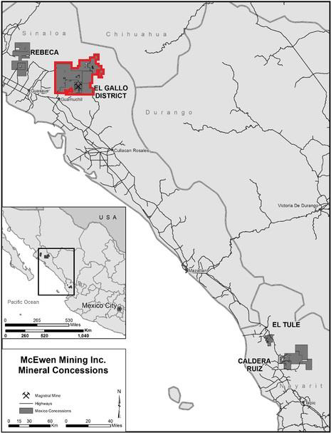
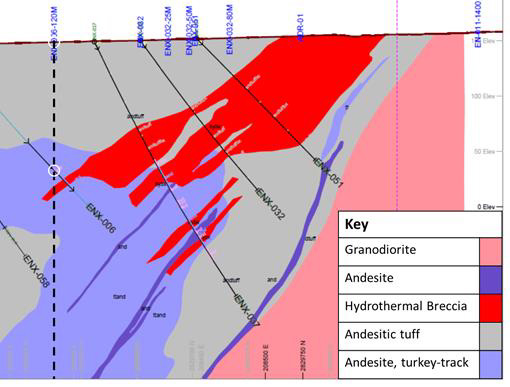
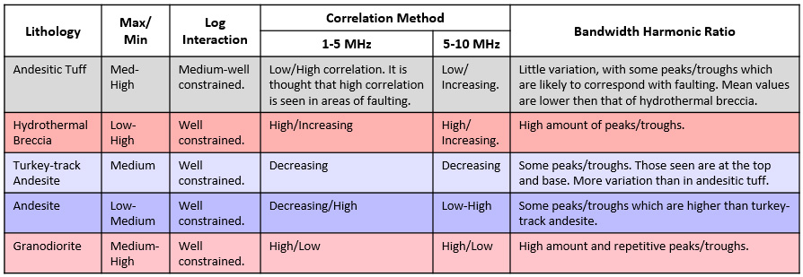
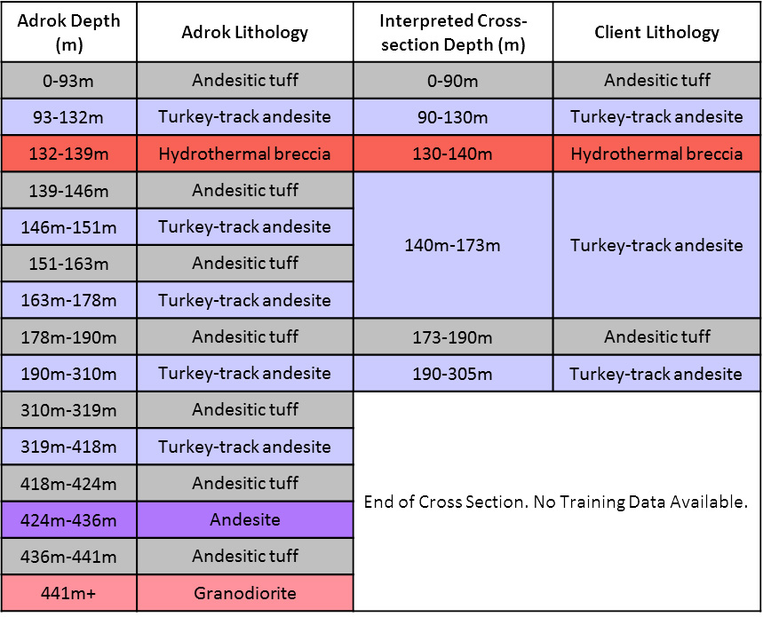

Identifying gold bearing hydrothermal veins in the Sinaloa Region of Mexico.
Introduction
The aim of this project was to establish if ADR scanning could assist McEwen Mining in identifying the gold bearing hydrothermal vein system, lithological boundaries and the granodiorite upper contact in the El Galo district of the Sinaloa region, Mexico (outlined in red in Figure 1). The project to date has consisted of: field survey data collection (between 20th February 2017 to 2nd March 2017) processing, interpretation and reporting (April- May 2017).
 Figure 1: Location Map with the survey location outlined in red (United States Securities and Exchange Commission, 2011).Geological Context
The survey area’s underlying geology is made up of a Lower Volcanic Series and an Upper Volcanic Series. The Lower Volcanic Series is Late Cretaceous to Eocene in age with predominantly andesitic volcanic rocks and intrusive Coeval granitic plutons that are late Cretaceous to early tertiary in age. The Oligocene-Miocene age Upper Volcanic Series is composed of rhyodacitic to rhyolitic ignimbrites (Read and Willis, 2013).
The mineralised bodies in surrounding areas are shallow dipping breccia sheets (at around 20°). The deposits are related to the intrusive body and are typical IOCG (Iron oxide copper gold) deposits with breccia bodies which are in sheets running parallel to the underlying intrusions, hematite being the main ore mineral alongside the presence of strong potassium alteration (McEwen Mining, 2018).
Gold deposits occur along three structural trends (north-west, north-south and north-east) and along substructures. They are most likely within andesite that has potassic alteration (Read and Willis, 2013) (Mining Technology, 2018).
Adrok’s Results
Processing and interpretation was carried out on 6 training holes. For these holes, interpreted cross sections and well data that intersected our hole in at least one location were provided. This allowed a training database to be created and used to interpret 3 blind holes.
A combination of the following interpretation techniques was used to successfully identify changes in lithology:
- Minimum/Maximum analysis can be a useful indicator as the density of peaks/troughs in the harmonic logs varies with the lithology.
- Log Interaction analysis is a useful technique as relationships between peaks and troughs varies with lithology and therefore log interaction patterns can be used to determine the certainty of a lithology presence.
- Correlation Method can be used to infer geological changes due to the change in the correlation and standard deviation of the signal. Specific relationships can be used to identify boundaries.
- Bandwidth Harmonic Ratio can be used to determine lithological changes with depth by comparing the presence/density of peaks/troughs as specific patterns are common to certain lithologies.
An example of all interpretative techniques can be seen in Appendix 1.
The results correlated well with the well data provided, as well as with the interpreted cross sections. For some of the holes, Adrok provided evidence of thinner, previously undetected layers of hydrothermal breccia that had the potential to be gold bearing.
Training Hole Results
Adrok was provided with interpreted cross sections that ran through our hole locations (see Figure 2).
 Figure 2: Client provided cross section for H10 (ENX006-120m). The black dotted line highlights the location of Adrok vertical V-bore. It can be seen that there is 1 place of known geology from a well (outlined by the white circle)A training database was created using the interpreted cross sections, taking into account the areas with well control at the V-bore location for a specific depth. Figure 3 outlines the log responses determined for various lithologies based on the training data.
 Figure 3: Log responses for various lithologies based on training data provided by McEwen MiningFigure 4 compares the depths that we have determined from our interpretation for H10(ENX006-120m) with the lithological depths from the provided cross section. The Interpreted Adrok Depths are comparable to the depths provided in the cross section, although there are slight variations such as:
- The thicknesses vary slightly. For example, the hydrothermal breccia is at 132-139m but the provided cross section indicates that it is at 130-140m.
- We believe there is andesitic tuff at 139-146m and 151-163m that were previously undetected.
- We have continued to interpret the data past the end of the cross section and have identified andesitic tuff, turkey-track andesite, andesite and the start of the granodiorite.
From this, it is clear that we can determine changes in lithology accurately.
 Figure 4: Comparison of Adrok Interpreted Depths with Interpreted Cross-Section Depths for H10 (ENX006-120m)Blind Hole Results
The training database created based on the training holes was used to interpret the blind holes.
The logs show the lithology depths determined for H8 (ENX075-50m) and H9 (ENX075-100m) (see Figure 5). The map highlights the distance between the two holes and their relation to one another. It can be seen that there are similarities between the two holes, such as:
- More extensive andesitic tuff from 0-550m.
- Predominantly turkey-track andesite after 550m.
- Presence of thin layers of hydrothermal breccia throughout the log (however, mostly towards the top of the log).
- Faulting/fractures observed throughout the logs in various lithology.
- In both logs, it has been determined that the granodiorite is not present in the first 1000m.
Client Benefits
- Non-intrusive technique capable of quantitative estimations of flow.
- Easy and fast acquisition of data, with very low environmental impact.
- Adrok were able to identify the gold bearing hydrothermal vein system, lithological boundaries and the granodiorite upper contact.
Acknowledgements
This work would not have been possible without the support of McEwen Mining, which Adrok Ltd thanks for providing access to sites and their collaboration on developing the techniques used in this study.
References
Mining Technology. (2018). El Gallo Mine - Mining Technology. [online] Available at: https://www.mining-technology.com/projects/el-gallo-mine [Accessed 9 Jan. 2018].
United States Securities and Exchange Commission. (2011). Annual Report Pursuant to Section 13 Or 15(D) Of the Securities Exchange Act Of 1934. [online] Available at: https://www.sec.gov/Archives/edgar/data/314203/000104746912002393/a2207815z10-k.htm [Accessed 9 Jan. 2018].
McEwen Mining (2018). McEwen Mining Inc. - Operations - El Gallo Mine. [online] Available at:http://www.mcewenmining.com/operations/el-gallo-mine/default.aspx [Accessed 8 Jan. 2018].
Read, J. and Willis, L. (2013). Resource Estimate for the El Gallo Complex. McEwen Mining, [online] pp.7.1-7.2. Available at: http://s21.q4cdn.com/390685383/files/doc_downloads/el-gallo-silver/20130830_elgallo_43101.pdf [Accessed 8 Jan. 2018].